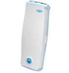

Дезар - облучатель-рециркулятор бактерицидный
Облучатель-рециркулятор бактерицидный Дезар предназначен для обеззараживания воздуха помещений всех категорий: лечебно-профилактических учреждений (операционные, ожоговые палаты, врачебные комнаты, палаты и т. д.). Он может применяться в комплексе санитарно-гигиенических мероприятий при подготовке помещения к работе, но основная его задача - работа в помещениях, где требуется постоянное поддержание асептических условий в присутствии людей. Также рециркулятор Дезар предназначен для использования в помещениях с повышенным риском распространения заболеваний, передающихся воздушно-капельным и воздушным путем.
Дезар - это облучатель-рециркулятор закрытого типа. Источником ультрафиолетового излучения являются бактерицидные лампы TUV фирмы PHILIPS или G15T8 фирмы LightTech или HNS 15W OFR фирмы Osram с длиной волны 254 нм. УФ излучение с указанной длиной волны обладает широким спектром действия на микроорганизмы, включая бактерии, вирусы, грибы и споры.
Облучатели-рециркуляторы Дезар выпускаются настенного (Дезар-2, Дезар-3, Дезар-5 и Дезар-6) и напольного (Дезар-4, Дезар-7 и Дезар-8) исполнения.
Облучатели-рециркуляторы бактерицидные Дезар
Лампы создают излучение достаточное для разрушения всех микроорганизмов, присутствующих в помещении (эффективность дезинфекции воздуха в зависимости от модели рециркулятора 95-99,9 %
Отсутствие прямых УФ-лучей и озона делает рециркуляторы Дезар абсолютно безопасными для использования в присутствии людей.
Характеристики облучателей-рециркуляторов Дезар
Характеристики облучателей-рециркуляторов Дезар приведены в таблице.
| Модель | Описание | Габаритные размеры, мм | Вес, кг | Мощность, Вт | Цена, руб. |
|---|---|---|---|---|---|
| ДЕЗАР-2 | Степень обеззараживания 95% Производительность 70 м3/час |
605х370х140 | 3,5 | 35 | 7400 |
| ДЕЗАР-3 | Степень обеззараживания 99% Производительность 100 м3/час |
890x370x140 | 4,75 | 60 | 7500 |
| ДЕЗАР-4 | Модель на передвижной опоре. По характеристикам аналогична облучателю ДЕЗАР-3 | 1200x370x580 | 8,5 | 60 | 8100 |
| ДЕЗАР-5 | Настенная модель. Степень обеззараживания 99,9% Производительность 100 м3/час |
890x370x140 | 5,15 | 100 | 10 100 | ДЕЗАР-6 | Степень обеззараживания 99,9% Производительность 90 м3/час |
1420x300x180 | 6,9 | 100 | 12 900 |
| ДЕЗАР-7 | Модель на передвижной опоре. По характеристикам аналогична облучателю ДЕЗАР-5 | 1200x370x580 | 8,9 | 100 | 10 300 |
| ДЕЗАР-8 | Модель на передвижной опоре. По характеристикам аналогична облучателю ДЕЗАР-6 | 1800x300x570 | 11,15 | 100 | 13 500 |
Чтобы приобрести облучатели-рециркуляторы Дезар или за дополнительной информацией обращайтесь по телефону (495) 745-60-52 или по электронной почте 7456052@mail.ru.